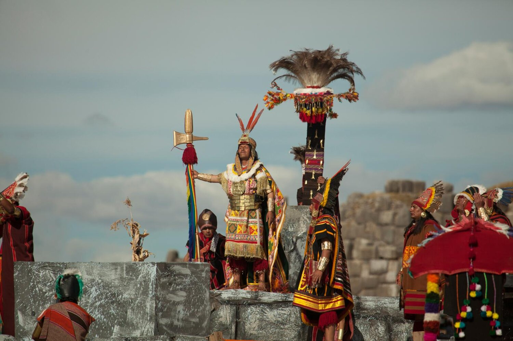
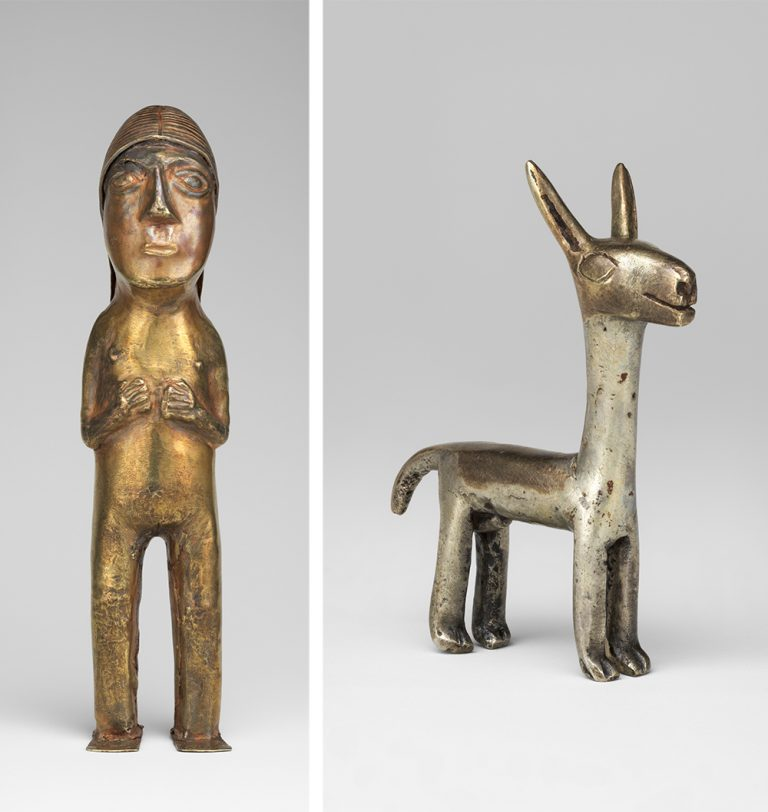

The Incan Empire, emerging in the early 15th century in the highlands of Peru, was founded by Manco Capac, believed by the Incas to be the son of the Sun God Inti. From its humble beginnings, the empire grew into a powerful force, uniting diverse ethnic groups through strategic alliances and innovative agricultural practices, ultimately creating one of the most sophisticated pre-Columbian civilizations in South America.
El Tumi, an iconic ceremonial knife from ancient Peru, symbolizes spiritual significance and surgical precision. Crafted by skilled metallurgists, this unique artifact served as a ritual tool in Incan ceremonies, showcasing intricate designs and metallurgical expertise. Today, el Tumi stands as a symbol of Peruvian heritage and the craftsmanship of the ancient Andean civilizations. The Tumi is often sold as a keychain to symbolize good luck.
Incan metalwork showcased unparalleled artistry, blending cultural symbolism with exceptional skill. Intricately crafted golden artifacts, such as ceremonial masks, and jewelry reflect the empire's advanced metallurgical techniques. The Incas' mastery extended to textiles, pottery, and architectural marvels like Machu Picchu, leaving behind a rich legacy of artistic brilliance and engineering prowess in the annals of Andean history.
The Incan Empire's rich tapestry of customs and rituals wove together spirituality, community, and governance. With a deep reverence for nature and celestial forces, the Incas conducted elaborate ceremonies, such as the Inti Raymi festival, honoring the Sun God. Rituals involving offerings, like the revered coca leaves, were central to religious practices. Intricate textiles and symbolic patterns, played a crucial role in expressing identity and status, reflecting the Incas' cultural sophistication.
The tragic fall of the Incan Empire began in 1532 when Spanish conquistador Francisco Pizarro's arrival in Peru led to a catastrophic clash of civilizations. Despite the Incas' advanced society, superior military technology, internal divisions, and the devastating impact of European diseases weakened them. Pizarro exploited these vulnerabilities, capturing the Inca ruler Atahualpa and ultimately forever altering South American history.
Pizarro, along with his partners Diego de Almagro and Hernando de Luque, organized expeditions to explore and conquer new territories in South America. Peru, with its rumored wealth and tales of a powerful and sophisticated Inca civilization, attracted Pizarro's attention. The primary motivation for Pizarro and his expedition was the pursuit of valuable resources, personal enrichment, the desire for glory and prestige, and the quest for new territories for the Spanish Crown.